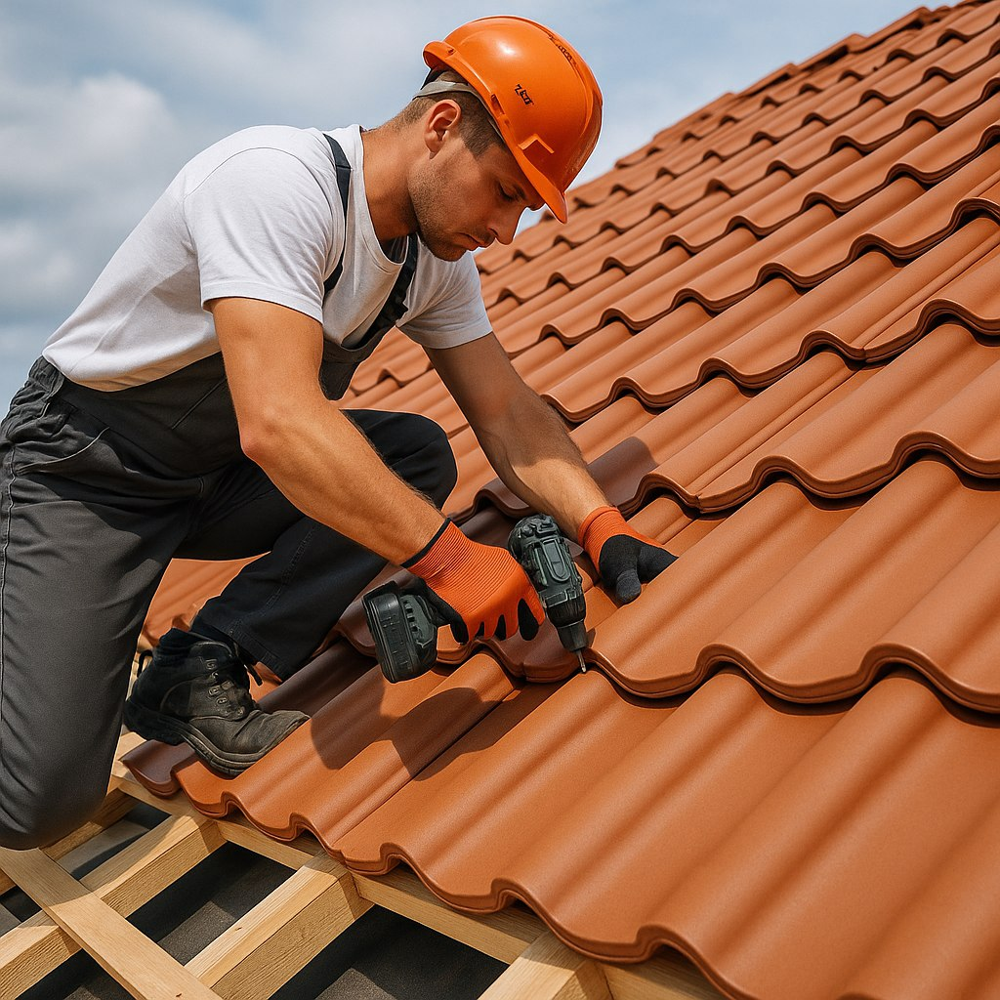

Крыша, утепление, гидроизоляция
Кровельные работы в Калининграде
Выполняем кровельные работы для частных домов и коттеджей: устройство стропильной системы, монтаж покрытия, утепление, гидроизоляцию и ремонт кровли.
- Новые крыши и ремонт
- Под разные материалы
- С учетом климата региона
Какие кровельные работы выполняем

Почему важен правильный монтаж
- Кровля защищает дом от влаги и ветровой нагрузки.
- Ошибки в узлах приводят к протечкам и теплопотерям.
- Неправильная вентиляция сокращает срок службы конструкции.
- Качественный монтаж уменьшает расходы на ремонт в будущем.
Что влияет на цену кровли
FAQ по кровельным работам
Да, можно заказать как локальный ремонт, так и полную замену кровельной системы.
Да, утепление и гидроизоляция могут выполняться как отдельная услуга.
Да, подскажем покрытие с учетом бюджета, архитектуры дома и условий эксплуатации.
Нужна новая кровля или ремонт крыши
Подготовим расчет после описания площади, типа крыши и текущего состояния конструкции.
Контакты
Опишите тип крыши, площадь и задачу. Рассчитаем стоимость монтажа или ремонта кровли.
+7(921)618-23-77- Telegram: @CKcaizer
- Email: kaizer.sk@yandex.ru